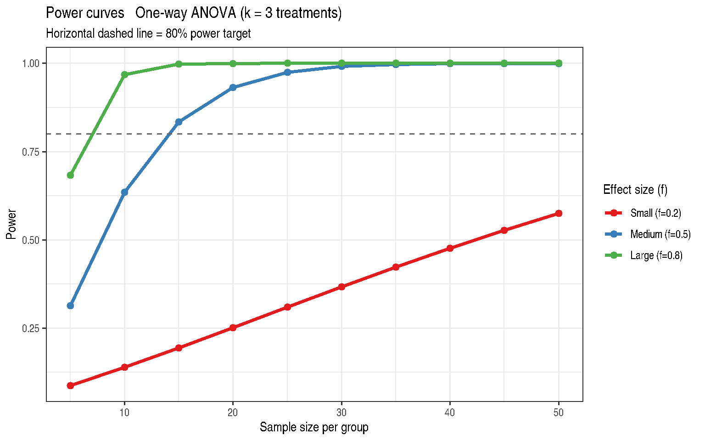

Chapter 21: Precision, Power, Sample Size, and Planning
Prospective Power Analysis for GLMM Designs
2026-05-12
Source:vignettes/chapter-21-power-sample-size.qmd
1 Overview
Chapter 21 addresses prospective power analysis for experiments involving GLMMs. The goals are to:
- Determine the minimum sample size for a desired power level
- Understand how effect size, variance, and design structure interact
- Extend classical power formulas to mixed model contexts
2 Theory: Power for a One-Way ANOVA
For a balanced one-way ANOVA with \(k\) treatments and \(n\) observations per group, the F-statistic under the alternative hypothesis follows a non-central F distribution:
\[F \sim F_{df_1,\, df_2,\, \lambda}\]
with non-centrality parameter:
\[\lambda = n \sum_{i=1}^{k} \frac{\tau_i^2}{\sigma^2} = nk f^2\]
where Cohen’s \(f\) is the standardised effect size:
\[f = \sqrt{\frac{\sum \tau_i^2 / k}{\sigma^2}}\]
Power is:
\[\text{Power} = 1 - F_{df_1,df_2,\lambda}\left(F_{\alpha, df_1, df_2}\right)\]
3 Example 21.1 — Power Curves
'data.frame': 30 obs. of 3 variables:
$ n_per_group: int 5 10 15 20 25 30 35 40 45 50 ...
$ effect_size: num 0.2 0.2 0.2 0.2 0.2 0.2 0.2 0.2 0.2 0.2 ...
$ power : num 0.0872 0.1394 0.1949 0.2521 0.3098 ...
ggplot(
DataSet21.1,
aes(x = n_per_group, y = power,
colour = factor(effect_size),
group = factor(effect_size))
) +
geom_line(linewidth = 1.2) +
geom_point(size = 2) +
geom_hline(yintercept = 0.80, linetype = "dashed", colour = "grey40") +
scale_colour_manual(
name = "Effect size (f)",
values = c("#E41A1C", "#377EB8", "#4DAF4A"),
labels = c("Small (f=0.2)", "Medium (f=0.5)", "Large (f=0.8)")
) +
labs(
title = "Power curves — One-way ANOVA (k = 3 treatments)",
subtitle = "Horizontal dashed line = 80% power target",
x = "Sample size per group",
y = "Power"
) +
theme_bw() +
theme(legend.position = "right")
4 Minimum Sample Sizes
power_anova <- function(n, k = 3L, f = 0.5, alpha = 0.05) {
df1 <- k - 1L
df2 <- k * (n - 1L)
ncp <- k * n * f^2
fc <- stats::qf(1 - alpha, df1, df2)
1 - stats::pf(fc, df1, df2, ncp = ncp)
}
min_n <- function(f, target = 0.80, k = 3L) {
ns <- 2:300
pw <- sapply(ns, power_anova, k = k, f = f)
ns[which(pw >= target)[1L]]
}
results <- data.frame(
effect_size = c("Small (f=0.2)", "Medium (f=0.5)", "Large (f=0.8)"),
f = c(0.2, 0.5, 0.8),
min_n_80pct = sapply(c(0.2, 0.5, 0.8), min_n, target = 0.80),
min_n_90pct = sapply(c(0.2, 0.5, 0.8), min_n, target = 0.90)
)
knitr::kable(results, caption = "Minimum n per group for 80% and 90% power")| effect_size | f | min_n_80pct | min_n_90pct |
|---|---|---|---|
| Small (f=0.2) | 0.2 | 82 | 107 |
| Medium (f=0.5) | 0.5 | 14 | 18 |
| Large (f=0.8) | 0.8 | 7 | 8 |
5 Mixed Model Power Considerations
For a mixed model, the effective sample size and degrees of freedom depend on the design structure. Key considerations:
- Intra-class correlation (ICC): High ICC reduces effective \(n\). The design effect is \(\text{DEFF} = 1 + (m-1)\rho\) for \(m\) observations per cluster.
- Degrees of freedom: Satterthwaite or Kenward-Roger df affect critical values and therefore power.
- Variance component uncertainty: Pilot estimates of \(\sigma^2_b\) carry uncertainty; sensitivity analysis over a range of values is recommended.
## Illustration: effective sample size with ICC
icc_effect <- function(m, icc) 1 + (m - 1) * icc
cat("Design effect (m=5 obs/cluster) at various ICC:\n")Design effect (m=5 obs/cluster) at various ICC:
iccs <- c(0.0, 0.1, 0.3, 0.5)
for (icc in iccs) {
cat(sprintf(" ICC = %.1f -> DEFF = %.2f\n", icc, icc_effect(5, icc)))
} ICC = 0.0 -> DEFF = 1.00
ICC = 0.1 -> DEFF = 1.40
ICC = 0.3 -> DEFF = 2.20
ICC = 0.5 -> DEFF = 3.006 Key Takeaways
- Power depends on effect size (\(f\) or \(d\)), sample size, significance level, and the number of groups.
- Pilot studies provide estimates of \(\delta\) and \(\sigma\), but these carry uncertainty — use conservative estimates.
- In mixed models, the ICC reduces effective sample size; high ICC requires larger \(n\) than a simple one-way ANOVA.
- Always report power together with the assumed effect size and variance.
7 References
Stroup, W. W., Ptukhina, M., and Garai, S. (2024). Generalized Linear Mixed Models: Modern Concepts, Methods and Applications (2nd ed.). CRC Press.
Cohen, J. (1988). Statistical Power Analysis for the Behavioral Sciences, 2nd ed. Lawrence Erlbaum Associates.